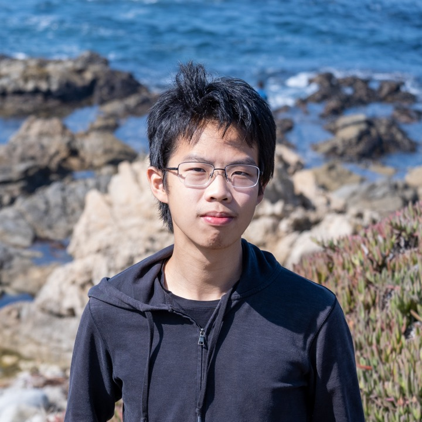

Yi (Jerry) Li
I am a Machine Learning Researcher at Qualcomm. I work on efficient and reliable multimodal AI, spanning video understanding, vision-language models, robotics, and physical AI.
More about meLess about me
I received my PhD in Electrical and Computer Engineering from UC San Diego in 2024, advised by Nuno Vasconcelos, and my BEng in Electronic Engineering from CUHK in 2017. I previously interned at the MIT-IBM Watson AI Lab and Intel AI Lab.

Research interests
Multimodal & Agentic AI
- Vision-language models
- Video understanding
- Multimodal agents
Efficiency & Reliability
- Efficient inference
- Model reliability
- Privacy & fairness
Robotics & Physical AI
- Spatial reasoning
- Memory
- Embodied intelligence
Publications
Latent Bridge: Feature Delta Prediction for Efficient Dual-System Vision-Language-Action Model Inference
TL;DR
Predicting changes in visual-language features to reduce the cost of VLA inference.
No publications match your search. Try another title, author, or topic.
* Equal contribution
News
CoMET accepted to the NeurIPS Evaluations & Datasets track.
ForeSea accepted to ECCV.
Memory-augmented selective prediction accepted to ICLR.
EgoPrivacy accepted to ICML: understanding privacy risks in first-person video.
Defended my PhD thesis, Holistic Bias Mitigation in Computer Vision and Beyond. Watch the defense
Earlier milestones
Attended the CVPR Doctoral Consortium, mentored by Kate Saenko.
Named a CVPR Outstanding Reviewer.
SViTT accepted to CVPR 2023.